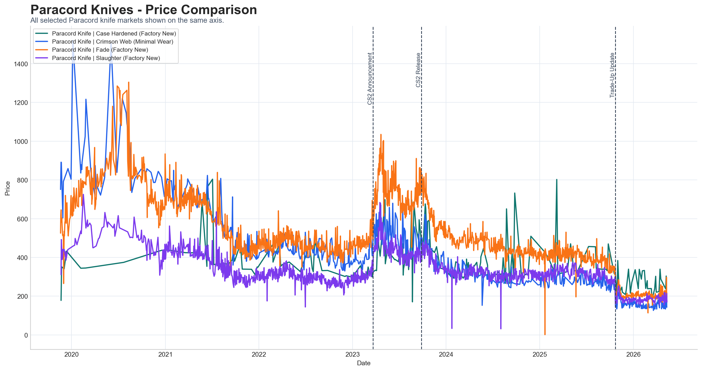
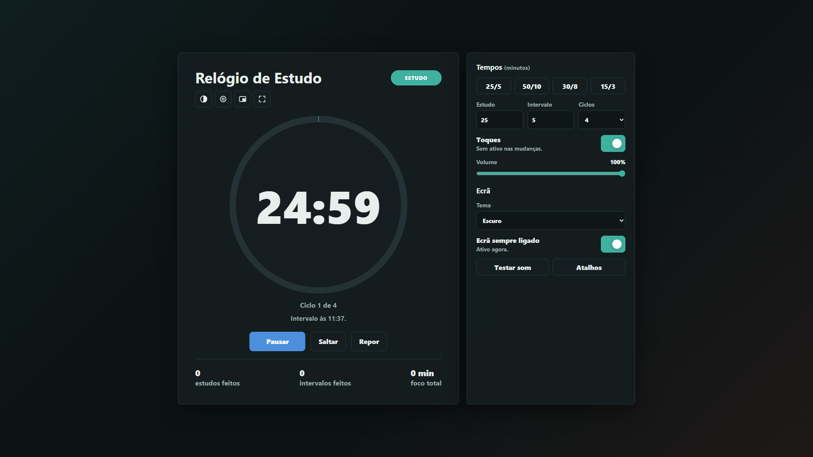

01. Financial Models
Excel models with sales forecasts, running costs, cash flow, NPV, IRR and payback, built for real investment projects.

Final-year Economics student at the University of Beira Interior. Since September 2026 I have been interning part-time at a consultancy in Leiria that prepares funding applications for small companies.
Excel models with sales forecasts, running costs, cash flow, NPV, IRR and payback, built for real investment projects.
Portugal 2030 applications: eligibility checks on financial statements (SNC, NC-ME), market analysis, operating plans and eligible-cost tables.
Economic research with R and Python: price data, volatility, event studies and clear charts and dashboards in Power BI.
Sep 2026 – Present
Zeferino Consultores · Leiria, Portugal
2024
Escola de Condução Bagagem · Batalha, Portugal
2023 – Present
University of Beira Interior · Covilhã, Portugal
Portuguese · native
English · B2, C1 certification in progress

Research report on market power on a digital platform: how prices are set and how supply, demand and shocks move them, using the Counter-Strike 2 skins market as the case. I gathered historical price data with Python and analysed it in R to measure volatility and the effect of changes in market structure.
Python library to measure the market risk of a portfolio with Value-at-Risk and Expected Shortfall: historical, parametric and Monte Carlo methods, backtesting and stress testing, built step by step with tests and CI.

Study timer with study and break cycles, made to sit on a small secondary monitor next to the computer. Large digits that fit any screen, focus mode, floating window and bell alerts.
Extra training and certificates, focused on Excel, Power BI, business English, decision support, inclusive communication, digital skills and risk awareness.
2026
Santander Open Academy certificate focused on intermediate-to-advanced spreadsheet work, data handling and practical Excel workflows.
2026
Santander Open Academy certificate strengthening Microsoft Excel fundamentals for academic and analytical work.
2026
Santander Open Academy certificate supporting professional communication and business-oriented English.
2026
University of Beira Interior short course, approved by the Faculty of Arts and Letters, on how language shapes thinking and how to write clearly and inclusively.
2025
University of Beira Interior training on productivity, fatigue-related risks, work organisation and prevention best practices.
2024
University of Beira Interior course on turning information into dashboards, metrics and decision-support visuals.
2023
STAR Junior Enterprise event certificate and winner recognition, covering web development, communication, LinkedIn and cybersecurity.
Contact me
If a model or a chart can make a decision less vague, I probably want to build it.
simaofiuza.cv@gmail.comLeiria, Portugal · local time: --:--
↑↓ to move · Enter to open · Esc to close